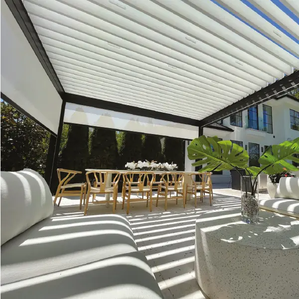

Skylight indoor
₹1,200 / sq ft
A fabric shade fitted inside, under the glass of a skylight, to soften the sun that comes in from above.
Best for: skylights over halls, stairs and kitchens
Price this →Preview only. Rates are real starting rates, but nothing you enter reaches Window Works, and product advice is still to be checked by them.
Skylight shades, Pergoflex, Pergoshade, Pergoroof and louvers, made with Italian fabric at our plant in Coimbatore. From ₹1,200 per sq ft before GST.
Measure the area you want covered. Type its length and width, and all five prices change.
₹1,44,000 to ₹1,87,200
Plus GST. Counted as 120 sq ft. A guide from starting rates. The final price comes after we measure on site.

LouversPriced after a visitAsk us₹1,200 / sq ft
A fabric shade fitted inside, under the glass of a skylight, to soften the sun that comes in from above.
Best for: skylights over halls, stairs and kitchens
Price this →₹1,800 / sq ft
A flexible fabric roof that runs along rails, so you can open it to the sky or close it for shade.
Best for: sit-outs, gardens and terraces
Price this →₹2,400 / sq ft
A fabric roof on a pergola frame, for an outdoor room that stays usable through sun and rain.
Best for: outdoor lounges and dining areas
Price this →
₹2,500 / sq ft
A shade fitted outside, over a skylight or a terrace, so the sun is stopped before it reaches the glass.
Best for: terraces and roof skylights
Price this →₹2,500 / sq ft
Fabric stretched over a slim pergola frame, for clean, even shade over a terrace or outdoor dining area.
Best for: terraces and outdoor dining
Price this →Ask us
A pergola roof made of slats that tilt, to let in light and air or close up against the sun.
Best for: pergolas over large outdoor areas
Ask for a visit →We import our fabric from Italy, from a world leader in flexible composite materials, and assemble every shade at our own plant in Coimbatore.
The fabric is light, durable and recyclable, and it is made for thermal performance and energy saving.
From a single skylight over a staircase to a whole terrace, for homes and for businesses.
Run a tape along the skylight opening, terrace or sit-out you want covered.
Measure across it the other way. A rough figure is fine.
We multiply the two to get the area. For the rough price, anything under 10 sq ft counts as 10.
Your figure is only for the rough price. We measure on site before the final price.
Videos from Window Works: skylights, a terrace and Pergoflex.
Skylights
At Window Works, indoor skylight shades start from ₹1,200 per sq ft, Pergoflex from ₹1,800, Pergoroof from ₹2,400, and outdoor skylights and Pergoshade from ₹2,500, all before GST. Louvers are priced after a visit.
We import it from Italy, from a world leader in flexible composite fabrics, and assemble everything at our own plant in Coimbatore.
They are made for thermal performance and energy saving: the fabric takes the heat of the sun before it reaches the room below.
Yes. Our skylight and Pergoflex jobs on this page are motorised. See our motorisation page for more.
No. We fit them on villas and homes, and also on offices, resorts, open-air hotels, halls, schools, playgrounds, farm houses and industrial buildings.
No, it is a rough guide based on our starting rates, plus GST. The fabric, frame and fittings decide the final figure, and we confirm it after measuring on site.
For the rough price, any area smaller than 10 sq ft is counted as 10 sq ft.
Tell us what you want covered, and our team will call to book a visit anywhere in Coimbatore. There’s no charge for the estimate.
19, G.R.D Layout, A.A. Scheme Road, RS Puram, Coimbatore 641002See everything against your own wall colours before you order.
Our team visits and takes every measurement with you there.
Processed and checked at our factory, then fitted and inspected at your home.
We don’t carry the cost of running an outlet, and that benefits you.